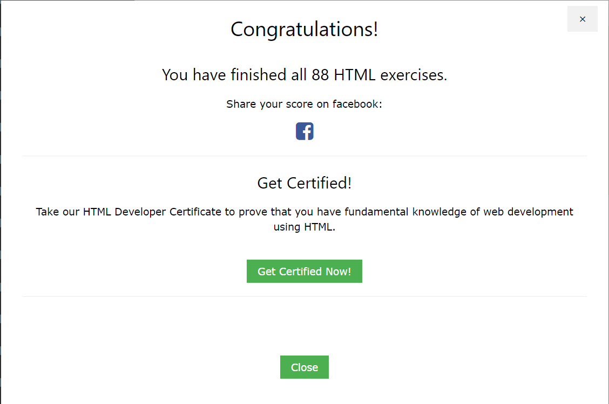

<h1>Repaso de HTML5</h1>
<h2>Se identifican con * los elementos propios de HTML5</h2>

<h3>Selecciona en el men&uacute; de la izquierda el elemento que quieras revisar.</h3>
<p>Este es el resultado de realizar los ejercicios de html de la <a href="https://www.w3schools.com/html/exercise.asp" target="_blank">página de w3school</a>:</p>

